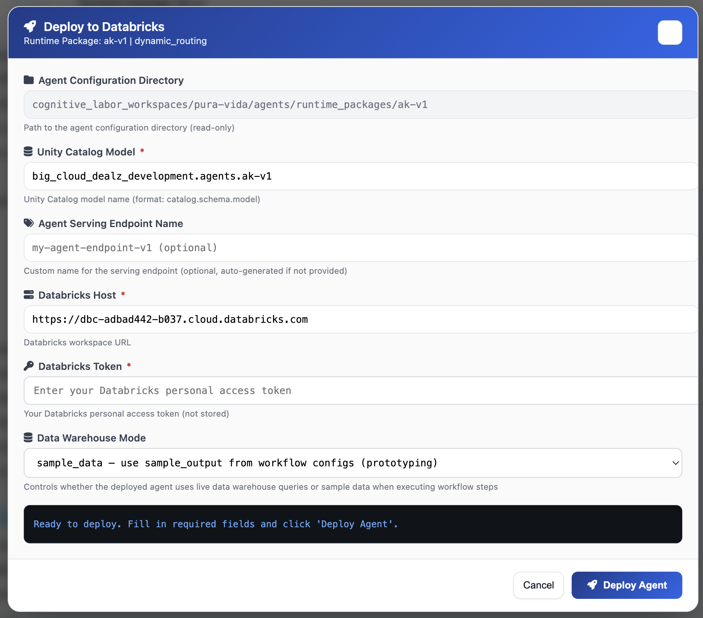
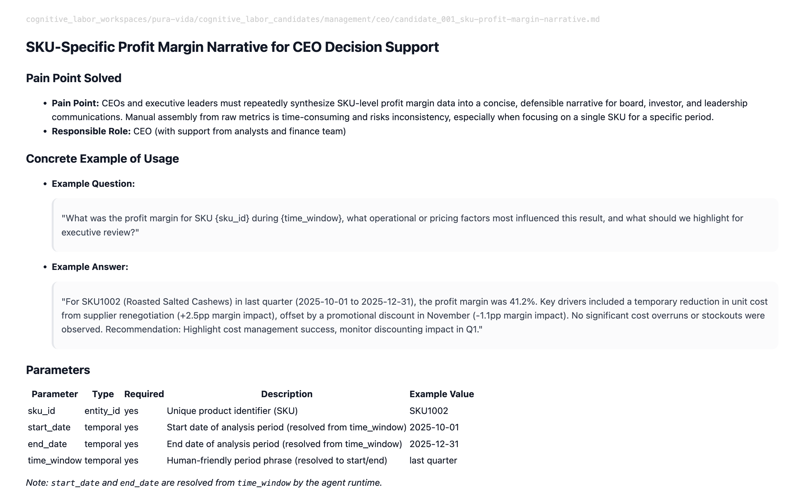

Decision Intelligence
for Rocket Money
How Augmented Reasoning turns Rocket Money's data warehouse
into a source of automated cognitive labor — and what a working prototype
looks like before this meeting ends.
Rocket Money's data is rich.
The cognitive labor to act on it isn't scalable.
-
⧗Your analysts spend the majority of their time in execution work — pulling data, formatting reports, querying behavioral tables — rather than on the pattern recognition and judgment calls that actually drive product and operations decisions.
-
✕Data warehouse insights exist but are locked behind manual interpretation cycles. By the time an analyst produces a narrative from raw behavioral data, the window to act has often narrowed.
-
$A "we saved some analyst hours" framing doesn't capture the real opportunity. The value is in what happens when your analysts stop processing and start deciding — applied to churn, subscription trends, and financial health signals at scale.
-
→The question isn't whether Rocket Money's data can support AI analysis — it clearly can. The question is how quickly you can get Decision Intelligence Agents running on that data, integrated into the workflows your teams already use.
A platform for turning cognitive labor
into repeatable, auditable workflows
-
1Knowledge Work Foundry (KWF) — analyzes roles, surfaces automatable cognitive workflows, and generates production-ready AI agent configurations from that discovery. The entire pipeline runs during a single working session.
-
2Agent Runtime — deploys the generated agent configs to your platform of choice. Patterson operates these as a managed service — so Rocket Money gets the output, not the infrastructure burden.
-
3Data Warehouse Integration — agents connect to your governed data — behavioral tables, transaction history, subscription data — and push decision-ready narratives back into the tools your teams already use.

We deploy, maintain, and iterate. Rocket Money subscribes to outcomes, not infrastructure.
Agent output integrates into dashboards, Slack, or any subscribing application.
Four steps. One session. Working agent.

Same analyst. Same salary.
Measurably more decision output.
Example: Rocket Money Data Analyst — $130K fully loaded
| Layer | Time | Multiplier | Value Generated |
|---|---|---|---|
| Execution | 55% | 1× | $71K |
| Judgment | 35% | 3× | $136K |
| Strategic | 10% | 7× | $91K |
| Total value generated | $298K | ||
Conservative multipliers. Execution ≈ commodity cost. Judgment prevents costly decision errors. Strategic drives product and operational outcomes at portfolio scale.
After automating 70% of execution layer:
| Layer | Pre | Post | Value Post |
|---|---|---|---|
| Execution | 55% | 16% | $21K |
| Judgment | 35% | 58% | $226K |
| Strategic | 10% | 26% | $237K |
| Total value generated | $484K | ||
At $25K/yr managed service — ROI: 7.4×
Conservative multipliers. Customer inputs their own role costs.
Three candidate agents worth
prototyping live today
- Monitors behavioral event tables for early churn signals — session frequency drop, feature disengagement, failed bill negotiation attempts
- Produces a daily narrative briefing: users in pre-churn state, signal strength, recommended retention action per segment
- Output routes to CRM, Slack, or retention workflow — no analyst query required
- Analyzes subscription category data across the user base — identifies emerging spend categories, seasonal patterns, and cancellation concentration
- Generates weekly product intelligence briefing: which subscription categories are growing, which are churning at abnormal rates, anomaly flags
- Output feeds product team dashboards and drives prioritization for new negotiation features
- Compares user bill amounts against cohort benchmarks and historical negotiation outcomes in your data warehouse
- Surfaces high-confidence negotiation candidates — users where bill is above cohort median and prior negotiation success rate is strong
- Produces prioritized opportunity list with predicted savings estimate per user — replacing the manual analyst triage currently required
What a Decision Intelligence Agent delivers in practice
This is a real KWF-generated use case — the kind of agent that comes out of a single working session.
-
✓Configured from a role description and business context — no custom engineering upfront
-
✓Connects to existing data — behavioral tables, transaction history, or warehouse metrics
-
✓Produces structured, auditable output that routes directly into your team's workflow
-
✓The same process applies to any Rocket Money use case — churn, subscriptions, bill negotiation

What a live KWF session
with Rocket Money looks like
- Patterson reviews available role descriptions, org structure, and any data schema context Eric provides
- We identify 2–3 target roles with high cognitive labor concentration
- No custom engineering required upfront — KWF handles the rest
- Run KWF analysis against selected roles — map functional areas, surface top candidate workflows
- Select one candidate — generate a working agent configuration in real time
- Prototype interacts with Rocket Money's data schema before the session ends
- Custom datasheet for the specific workflow prototyped
- Economic model pre-populated with Rocket Money's role costs
- Agent configuration ready for deployment to your stack
- Business case Eric takes to product and engineering leadership
Which data workflow in Rocket Money's
warehouse is generating the most
manual cognitive labor today?
Not "where could AI help?" — but which specific analyst role is spending the most time on defensible-but-not-differentiating work that should already be running as an agent against your data?